Table of Contents
Aerial object detection from drone-mounted cameras is a critical requirement for applications such as surveillance and traffic monitoring, yet it remains challenging due to extreme scale variation, high object density, and severe background clutter. We benchmark three detection paradigms on the VisDrone-DET2019 dataset: YOLOv11x as a CNN baseline, vanilla DETR as a standard transformer baseline, and DINO (DETR with Improved DeNoising Anchor Boxes) as the proposed state-of-the-art model. DINO achieves mAP@0.5 = 0.454 and mAP@0.5:0.95 = 0.265, outperforming YOLOv11x (0.304 / 0.173) and Vanilla DETR (0.081 / 0.034) by large margins, confirming that Contrastive DeNoising and multi-scale deformable attention substantially improve recall for small, densely packed aerial targets, though at a 2.6× reduction in throughput relative to YOLOv11x.
1. Introduction
Object detection from drone-mounted cameras enables critical applications including search and rescue, traffic monitoring, and infrastructure inspection.[1] Compared to ground-level imagery, aerial views introduce non-trivial challenges: extreme scale variance (objects range from 5×5 to hundreds of pixels), high instance density, arbitrary camera orientations, and severe background clutter. These factors render standard detectors—which were developed and tuned on ground-level benchmarks like MS COCO—significantly less effective in the UAV domain.
Two dominant paradigms have emerged for object detection: CNN-based detectors (e.g., YOLO, Faster R-CNN) that rely on anchor boxes and Non-Maximum Suppression (NMS), and transformer-based detectors (e.g., DETR and its successors) that formulate detection as set prediction via bipartite matching, eliminating hand-crafted post-processing. DINO[6] represents the current apex of the transformer line, introducing Contrastive DeNoising training, Mixed Query Selection, and a Look Forward Twice box refinement scheme to overcome the instability and poor small-object recall of vanilla DETR.[3]
In this project, we directly compare these three architectures on VisDrone to determine whether DINO's theoretical advantages translate to measurable gains in the aerial domain.
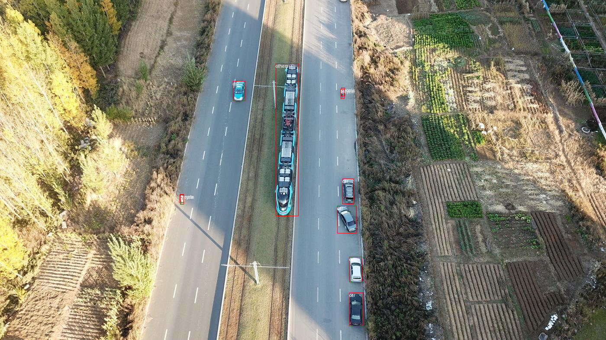
2. Approach
2.1. Models
YOLOv11 serves as our CNN baseline. It frames detection as a single regression problem over a dense grid of anchor boxes, followed by NMS. Its primary strengths are inference speed and low memory footprint, making it the pragmatic choice for edge deployment on UAVs with strict SWaP (Size, Weight, and Power) constraints.
Vanilla DETR[3] is our transformer baseline. It encodes an image with a CNN backbone, then applies a transformer encoder-decoder with learnable object queries and Hungarian-algorithm bipartite matching to produce a fixed-size set of detections without NMS. However, DETR is known to require 500+ epochs to converge and performs poorly on small objects due to limited multi-scale feature resolution.
DINO[6] is our proposed model, building on Deformable DETR[4] and DAB-DETR[5] with three core improvements:
- Contrastive DeNoising (CDN): Augments standard bipartite matching with noised positive and negative query groups derived from ground-truth boxes. Positive samples (small jitter around ground truth) force early spatial locking; negative samples (anchors far from ground truth) act as a learned surrogate for NMS, suppressing duplicate detections in dense crowds.
- Mixed Query Selection: Initializes the decoder's positional queries from the top-K encoder features, while keeping content queries as learnable parameters. This dynamic initialization ensures the decoder immediately attends to the most salient image regions, boosting recall for small targets.
- Look Forward Twice: Allows the refined bounding box from decoder layer i+1 to supervise the prediction of layer i, improving gradient flow and enabling tight localization of sub-15×15-pixel objects.
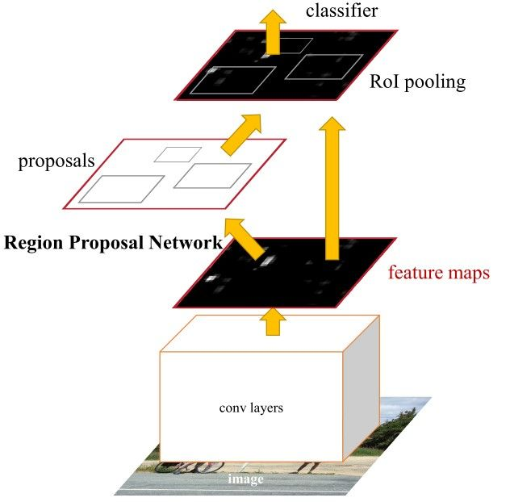
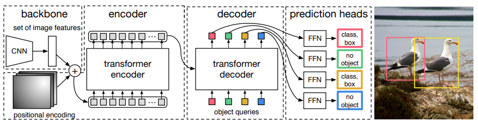

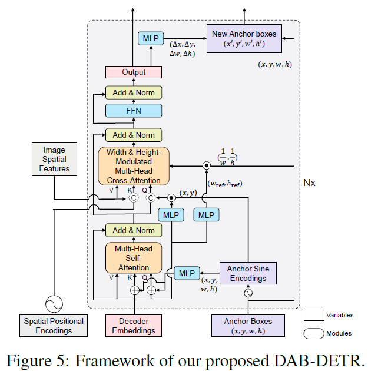

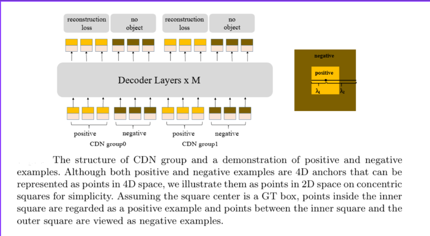


2.2. Dataset and Pipeline
We use the VisDrone-DET2019 dataset[1], partitioned according to the standard challenge splits: 6,471 training images, 548 validation images, and 1,610 test-dev images. Because DINO uses the PyTorch COCO evaluator natively, we engineered a custom conversion pipeline that parses VisDrone's text-format annotations and serializes them into instances.json files following the COCO schema, enabling a unified mAP computation across all three models.
All models were initialized with COCO-pretrained weights to leverage strong foundational features and accelerate convergence on the specialized aerial domain. Training was conducted on Kaggle using an NVIDIA T4 GPU (16 GB VRAM). Due to the extreme computational cost of multi-scale transformer training, DINO and DETR were fine-tuned for 20–30 epochs rather than trained from scratch; YOLOv11 was fine-tuned to convergence. These compute constraints are an acknowledged limitation and are factored into our result interpretation.
3. Experiments and Results
3.1. Evaluation Metrics
We evaluate all models on Mean Average Precision (mAP), Frames Per Second (FPS), and GFLOPs:
mAP = (1/N) · Σ ∫₀¹ pᵢ(r) dr
mAP@0.5 uses a single IoU threshold; mAP@0.5:0.95 averages over IoU thresholds from 0.5 to 0.95 in steps of 0.05, providing a stricter measure of localization quality. FPS is measured on the NVIDIA T4 GPU used for training. GFLOPs measure computational complexity at inference.
3.2. Quantitative Results
| Model | mAP@0.5 | mAP@0.5:0.95 | FPS (T4) | GFLOPs |
|---|---|---|---|---|
| YOLOv11x | 0.304 | 0.173 | 28.7 | 195.5 |
| Vanilla DETR | 0.081 | 0.034 | 25.0 | 86.0 |
| DINO | 0.454 | 0.265 | 11.0 | 289.3 |
3.2.1. YOLOv11x
YOLOv11x was fine-tuned on VisDrone and achieved mAP@0.5 = 0.304 and mAP@0.5:0.95 = 0.173, running at 28.7 FPS with a computational cost of 195.5 GFLOPs. The relatively high throughput reflects YOLO's CNN inductive biases, which are heavily optimized on modern GPU pipelines. However, the modest mAP highlights YOLO's known limitation in dense aerial scenes: NMS aggressively suppresses valid overlapping detections, causing missed instances whenever two objects of the same class share significant bounding box overlap from an aerial perspective—a frequent occurrence in VisDrone's crowded street scenes.
3.2.2. Vanilla DETR
DETR was fine-tuned with a ResNet-50 backbone (41.5M parameters, 41.3M trainable) using a transformer learning rate of 2×10⁻⁵, backbone learning rate of 5×10⁻⁶, and weight decay of 1×10⁻⁴.
The model achieved mAP@0.5 = 0.081 and mAP@0.5:0.95 = 0.034, with an inference speed of approximately 25 FPS at 86 GFLOPs. The low mAP is consistent with known limitations: DETR's single-scale attention provides limited spatial resolution for the small, dense targets that dominate VisDrone. The uniform quadratic attention over all pixels prevents the model from focusing on sub-15×15-pixel objects effectively. These exact limitations are what motivated the Deformable DETR and, subsequently, DINO architectures.
3.2.3. DINO
DINO achieved mAP@0.5 = 0.454 and mAP@0.5:0.95 = 0.265, representing a +49% relative improvement in mAP@0.5 and a +53% improvement in mAP@0.5:0.95 over YOLOv11x. These gains come at a cost: DINO runs at only 11.0 FPS with 289.3 GFLOPs—roughly 2.6× slower and 1.5× more compute-intensive than YOLOv11x. The accuracy gains are attributable to DINO's NMS-free bipartite matching preserving densely overlapping instances, and its multi-scale deformable attention maintaining spatial resolution for small targets. The strict localization metric (mAP@0.5:0.95) improving by a larger relative margin than mAP@0.5 confirms that Look Forward Twice provides tighter bounding box regression, not merely better recall.
4. Qualitative Results
We present three representative scene types from the VisDrone validation set: a dense urban intersection, a sparse parking lot, and an oblique street with heavy tree-canopy occlusion. Each scene is evaluated with YOLOv11x and DINO side-by-side.
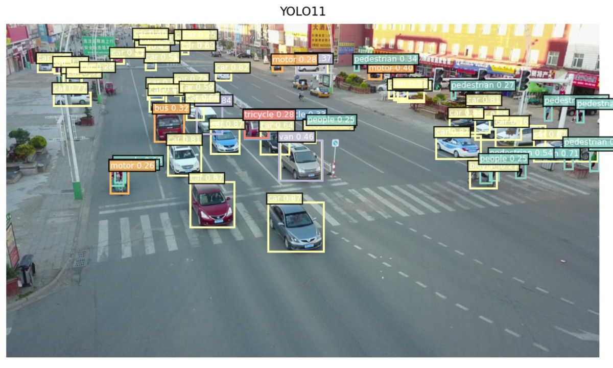
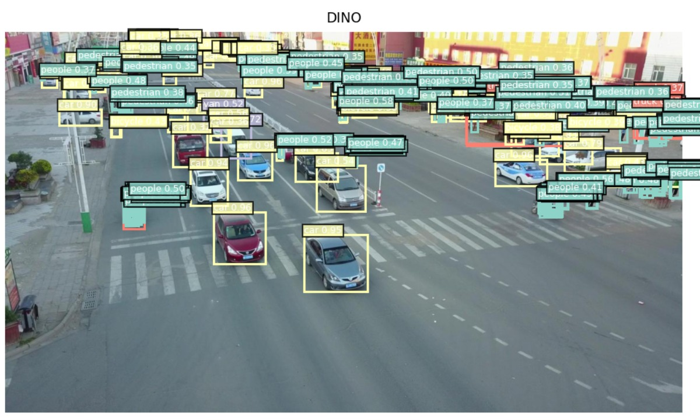
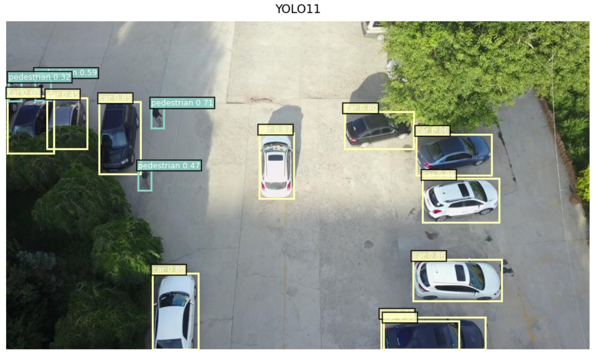
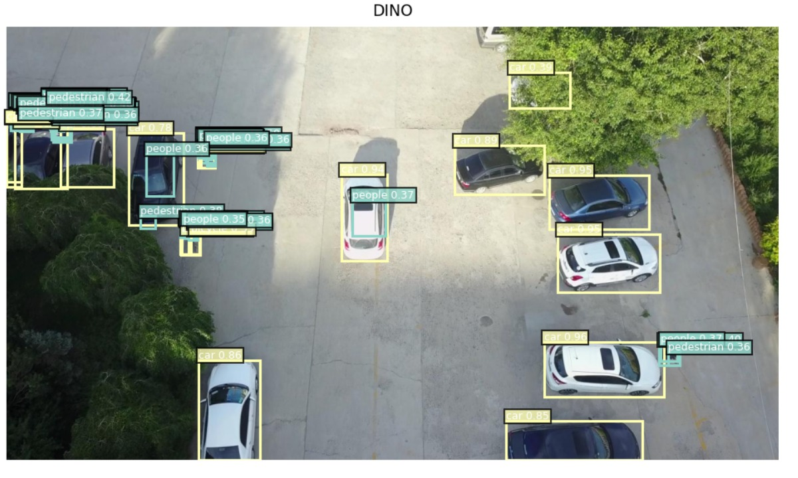
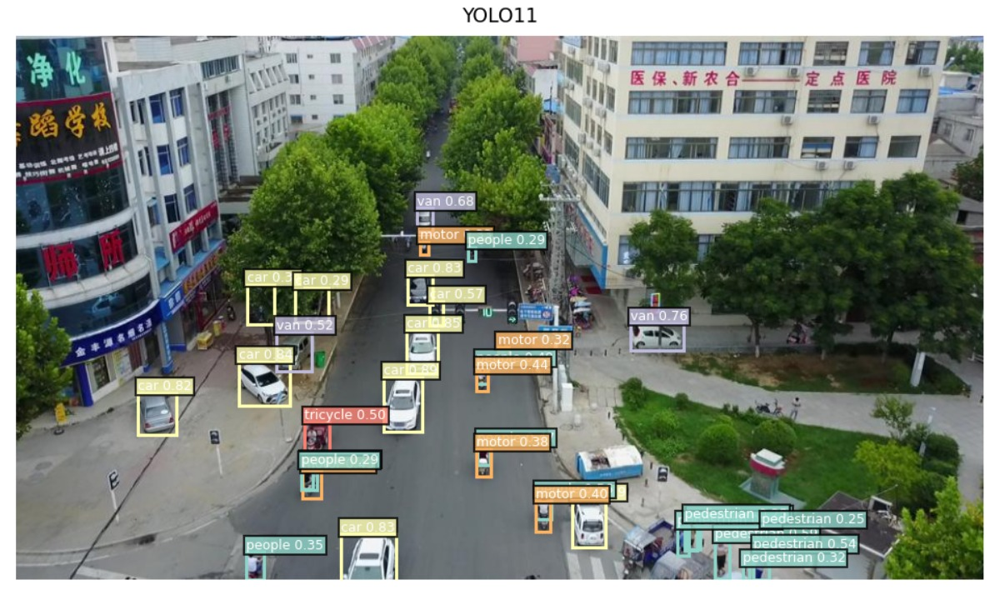
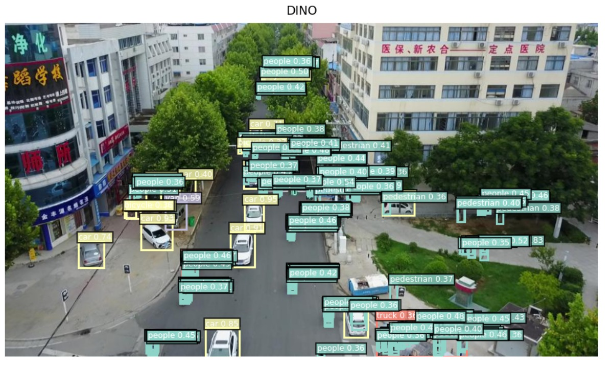
Dense intersection (Figure 5). In the crowded intersection scene, YOLOv11x detects vehicles with reasonable confidence but misses a large fraction of pedestrians clustered in the upper-right and upper-left sidewalk regions. DINO, by contrast, produces a substantially denser set of pedestrian detections in those regions, correctly labeling individuals that are tightly packed and partially overlapping from the aerial viewpoint. This directly reflects the NMS suppression problem: YOLOv11x's post-processing collapses overlapping pedestrian boxes, while DINO's one-to-one matching assigns a unique query to each instance. The trade-off is label clutter—DINO's output is visually noisier due to the high number of low-to-mid confidence detections (0.35–0.50), some of which may be false positives.
Sparse parking lot (Figure 6). In the less cluttered parking scene, both models perform well on stationary vehicles, with YOLOv11x achieving high-confidence car detections (0.80–0.87) and clean bounding box fits. DINO matches this vehicle detection quality (0.85–0.96) and additionally identifies pedestrians near the parked cars that YOLOv11x entirely misses—consistent with DINO's stronger recall for small objects. However, DINO also produces several spurious low-confidence "people" detections near shadows and car hoods, illustrating the weaker spatial inductive biases of transformer attention relative to CNN hierarchical pooling.
Oblique street with occlusion (Figure 7). This scene presents a challenging oblique viewing angle with significant tree canopy covering both the road center and sidewalks. YOLOv11x detects vehicles with high confidence (cars, vans, tricycles, motors at 0.38–0.85) but recovers only a sparse set of pedestrians—mostly those in open, unoccluded areas—entirely missing the clusters of people walking under the tree cover. DINO dramatically increases pedestrian recall across the full scene: it detects people in the upper road region, beneath the canopy, on the right-side sidewalk, and in the lower foreground, many of which are invisible to YOLOv11x. Notably, DINO also identifies a truck in the lower-right cluster that YOLOv11x does not label. The trade-off is a dense, overlapping label layout with scores in the 0.35–0.54 range, reflecting genuine uncertainty under heavy occlusion rather than false detection.
Summary. Across all three scenes, DINO consistently achieves higher recall for pedestrians and small instances, particularly under occlusion and in dense crowds, at the cost of lower per-detection confidence and a noisier output layout. YOLOv11x is faster, cleaner, and more precise on vehicles in open areas, but systematically under-detects in occluded or crowded regions. This qualitative pattern is fully consistent with the quantitative gap in Table 1.
5. Conclusion
We benchmarked three detection paradigms—YOLOv11x, Vanilla DETR, and DINO—on the VisDrone aerial dataset. Vanilla DETR's poor small-object recall (mAP@0.5:0.95 = 0.034) confirms that standard transformer attention is insufficient for dense aerial scenes. DINO achieves mAP@0.5 = 0.454 and mAP@0.5:0.95 = 0.265, outperforming YOLOv11x (0.304 / 0.173) by a substantial margin, validating that Contrastive DeNoising, Mixed Query Selection, and Look Forward Twice collectively address the core failure modes of both vanilla DETR and CNN-based detectors in the UAV domain. YOLOv11x remains the pragmatic choice at 28.7 FPS for edge deployment, while DINO at 11.0 FPS is better suited for high-accuracy offline analysis.
References
- P. Zhu et al., "Vision Meets Drones: A Challenge," arXiv:1804.07437, 2018.
- J. Redmon, S. Divvala, R. Girshick, and A. Farhadi, "You Only Look Once: Unified, Real-Time Object Detection," in CVPR, 2016, pp. 779–788.
- N. Carion et al., "End-to-End Object Detection with Transformers," in ECCV, 2020, pp. 213–229.
- X. Zhu et al., "Deformable DETR: Deformable Transformers for End-to-End Object Detection," in ICLR, 2021.
- S. Liu et al., "DAB-DETR: Dynamic Anchor Boxes are Better Queries for DETR," in ICLR, 2022.
- H. Zhang et al., "DINO: DETR with Improved DeNoising Anchor Boxes for End-to-End Object Detection," in ICLR, 2023.